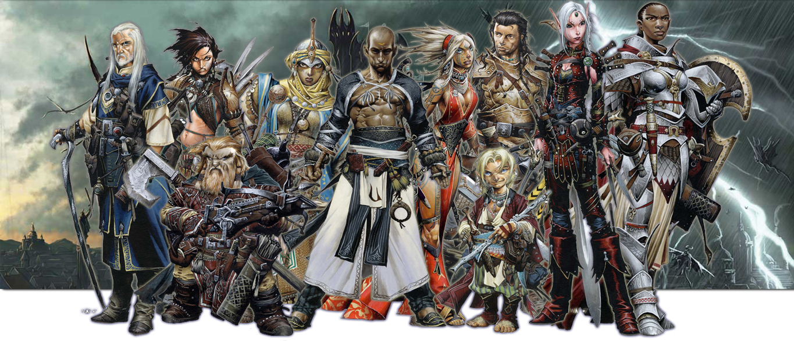

Welcome
This page is dedicated to a Pathfinder campaign being played by a group of friends. It's mainly for our use, so that we can have a knowledge compendium about our characters and the world they inhabit, as well as our adventure thus far. However, I like to think even people who aren't directly involved in this campaign can get some enjoyment out of it as well.
What is Pathfinder?
If you've ever played or heard of Dungeons & Dragons, you effectively know what Pathfinder is. It's a role-playing game played with other people, using pencils and paper, dice, and imagination. More information about it and games like it can be found in the links tab.
